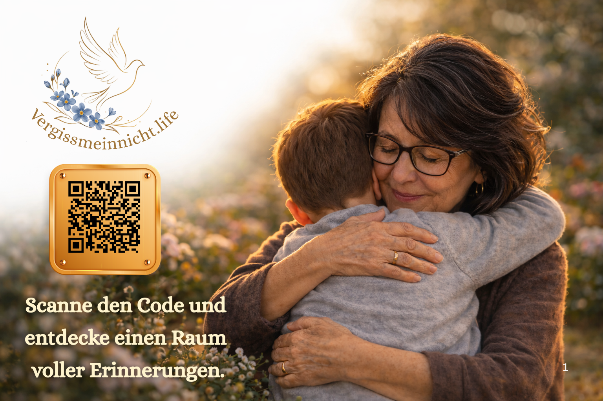

Ein stiller digitaler Erinnerungsraum für Menschen, die uns fehlen.
Beispiel ansehenVergissmeinnicht verbindet eine dezente Edelstahlplakette am Grab mit einem digitalen Erinnerungsraum. Besucher scannen den QR-Code und gelangen zu einer Seite, auf der Fotos, Geschichten und Worte eines Lebens bewahrt werden.
Eine dezente, wetterfeste Edelstahlplakette wird am Grabstein oder Erinnerungsort angebracht.
Besucher scannen den Code mit ihrem Smartphone – ganz ohne App, direkt im Browser.
Fotos, Worte und Geschichten eines Lebens bleiben sichtbar – für Familie, Freunde und kommende Generationen.
Hinter jedem Namen stehen ein Leben, eine Stimme und gemeinsame Erinnerungen.